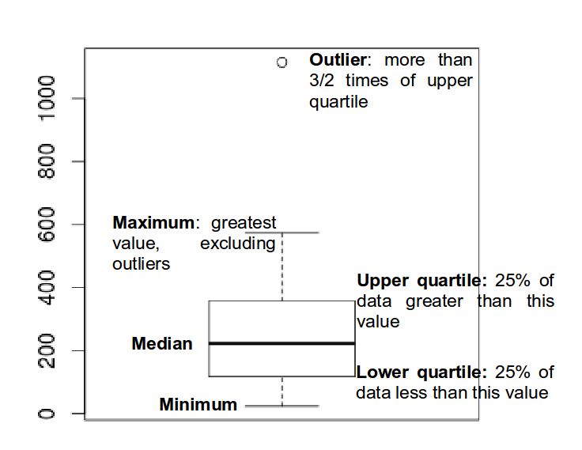
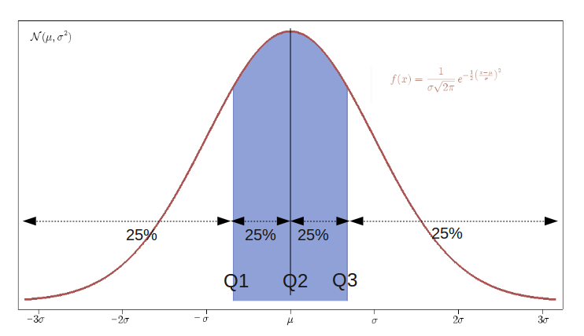
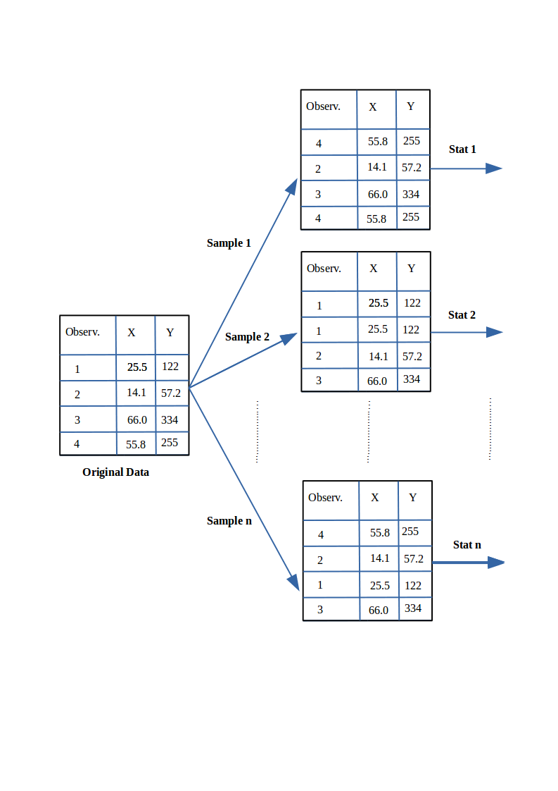

# Area within 2SD of the mean
par(mfrow = c(1, 2))
plot(function(x) dnorm(x, mean = 0, sd = 1), xlim = c(-3, 3), main = "SD 1", xlab = "x",
ylab = "", cex = 2)
segments(-2, 0, -2, 0.4)
segments(2, 0, 2, 0.4)
# Area within 4SD of the mean
plot(function(x) dnorm(x, mean = 0, sd = 4), xlim = c(-12, 12), main = "SD 4", xlab = "x",
ylab = "", cex = 2)
segments(-8, 0, -8, 0.1)
segments(8, 0, 8, 0.1)10 Exploratory Data Analysis
10.1 Descriptive statistics
The first task to do with any dataset is to characterize it in terms of summary statistics and graphics.
Displaying information graphically will help us to identify the main characteristics of the data. To describe a distribution we often want to know where it is centered and and what the spread is (mean, median, quantiles)
For software engineering datasets, EDA should also include data quality and validity checks (not only visual summaries).
10.2 EDA Checklist for Software Engineering Data
Before modeling, verify at least:
- Record counts and unique keys (files/modules/issues/commits)
- Missing values per variable
- Duplicated rows or duplicated IDs
- Class imbalance (for defect labels)
- Suspicious values (negative effort, impossible dates, zero size with non-zero effort)
- Correlated predictors and potential redundancy
- Data leakage risks (features created after the prediction time)
- Temporal consistency (training data should precede test data)
The checklist prevents many common pitfalls in defect prediction and effort estimation studies.
10.3 Basic Plots
Histogram defines a sequence of breaks and then counts the number of observations in the bins formed by the breaks.
Boxplot used to summarize data succinctly, quickly displaying if the data is symmetric or has suspected outliers.

- Q-Q plot is used to determine if the data is close to being normally distributed. The quantiles of the standard normal distribution is represented by a straight line. The normality of the data can be evaluated by observing the extent in which the points appear on the line. When the data is normally distributed around the mean, then the mean and the median should be equal. Quantiles are cut points dividing the range of a probability distribution into continuous intervals with equal probabilities, or dividing the observations in a sample in the same way.

Scatterplot provides a graphical view of the relationship between two sets of numbers: one numerical variable against another.
Kernel Density plot visualizes the underlying distribution of a variable. Kernel density estimation is a non-parametric method of estimating the probability density function of continuous random variable. It helps to identify the distribution of the variable.
Violin plot is a combination of a boxplot and a kernel density plot.
10.4 Normality
- A normal distribution is an arrangement of a data set in which most values cluster in the middle of the range
- A graphical representation of a normal distribution is sometimes called a bell curve because of its shape.
- Many procedures in statistics are based on this property. Parametric procedures require the normality property.
- In a normal distribution about 95% of the probability lies within 2 Standard Deviations of the mean.
- Two examples: one population with mean 60 and the standard deviation of 1, and the other with mean 60 and \(sd=4\) (means shifted to 0)
- if we sample from this population we get “another population”:
# tidy uses the package formatR to format the code
sample.means <- rep(NA, 1000)
for (i in 1:1000) {
sample.40 <- rnorm(40, mean = 60, sd = 4)
# rnorm generates random numbers from normal distribution
sample.means[i] <- mean(sample.40)
}
means40 <- mean(sample.means)
sd40 <- sd(sample.means)
means40
sd40- These sample means are another “population”. The sampling distribution of the sample mean is normally distributed meaning that the “mean of a representative sample provides an estimate of the unknown population mean”. This is shown in Figure @ref(fig:sampleMeansExample)
hist(sample.means)10.5 Using a running Example to visualise the different plots
As a running example we do next:
Set the path to the file
Read the Telecom1 dataset and print out the summary statistics with the command
summary
options(digits = 3)
telecom1 <- read.table("./datasets/effortEstimation/Telecom1.csv", sep = ",", header = TRUE,
stringsAsFactors = FALSE, dec = ".") #read data
summary(telecom1)10.5.1 Basic data quality checks (Telecom1)
# shape and simple quality checks
dim(telecom1)
colSums(is.na(telecom1))
sum(duplicated(telecom1))
# impossible values for this context (should be non-negative)
sum(telecom1$size < 0)
sum(telecom1$effort < 0)10.5.2 Temporal validation and leakage prevention
In software engineering data, random train/test splits may produce optimistic results when data from the same period (or release) appears in both sets.
When time order is available, prefer a chronological split:
- train on older projects/releases,
- test on newer projects/releases.
# Temporal split by order: first 70% for training, last 30% for testing. Use
# this only when the rows are already ordered chronologically.
n <- nrow(telecom1)
cutoff <- floor(0.7 * n)
telecom_train <- telecom1[1:cutoff, ]
telecom_test <- telecom1[(cutoff + 1):n, ]
dim(telecom_train)
dim(telecom_test)
# Compare basic distributions to detect temporal drift.
summary(telecom_train$effort)
summary(telecom_test$effort)If your dataset includes explicit dates (for example commit date or release date), sort by that field first and then split.
- We see that this dataset has three variables (or parameters) and few data points (18)
- size: the independent variable
- effort: the dependent variable
- EstTotal: the estimates coming from an estimation method
- Basic Plots
par(mfrow = c(1, 2)) #n figures per row
size_telecom1 <- telecom1$size
effort_telecom1 <- telecom1$effort
hist(size_telecom1, col = "blue", xlab = "size", ylab = "Probability", main = "Histogram of project Size")
lines(density(size_telecom1, na.rm = T, from = 0, to = max(size_telecom1)))
plot(density(size_telecom1))
hist(effort_telecom1, col = "blue")
plot(density(effort_telecom1))
boxplot(size_telecom1)
boxplot(effort_telecom1)
# violin plots for those two variables
library(vioplot)
vioplot(size_telecom1, names = "")
title("Violin Plot of Project Size")
vioplot(effort_telecom1, names = "")
title("Violin Plot of Project Effort")
par(mfrow = c(1, 1))
qqnorm(size_telecom1, main = "Q-Q Plot of 'size'")
qqline(size_telecom1, col = 2, lwd = 2, lty = 2) #draws a line through the first and third quartiles
qqnorm(effort_telecom1, main = "Q-Q Plot of 'effort'")
qqline(effort_telecom1)We can observe the non-normality of the data.
We may look the possible relationship between size and effort with a scatter plot
plot(size_telecom1, effort_telecom1)10.5.3 Example with the China dataset
library(foreign)
china <- read.arff("./datasets/effortEstimation/china.arff")
china_size <- china$AFP
summary(china_size)
china_effort <- china$Effort
summary(china_effort)
par(mfrow=c(1,2))
hist(china_size, col="blue", xlab="Adjusted Function Points", main="Distribution of AFP")
hist(china_effort, col="blue",xlab="Effort", main="Distribution of Effort")
boxplot(china_size)
boxplot(china_effort)
qqnorm(china_size)
qqline(china_size)
qqnorm(china_effort)
qqline(china_effort)dim(china)
colSums(is.na(china))
sum(duplicated(china))- We observe the non-normality of the data.
10.5.3.1 Normality. Galton data
It is the data based on the famous 1885 Francis Galton’s study about the relationship between the heights of adult children and the heights of their parents.
10.5.3.2 Normalization
Take \(log\)s in both independent variables. For example, with the China dataset.
- If the \(log\) transformation is used, then the estimation equation is: \[y= e^{b_0 + b_1 log(x)} \]
10.6 Correlation
Correlation is a statistical relationship between two sets of data. With the whole dataset we may check for the linear Correlation of the variables we are interested in.
As an example with the China dataset
par(mfrow=c(1,1))
plot(china_size,china_effort)
cor(china_size,china_effort)
cor.test(china_size,china_effort)
cor(china_size,china_effort, method="spearman")
cor(china_size,china_effort, method="kendall")10.7 Confidence Intervals. Bootstrap
- Until now we have generated point estimates
- A confidence interval (CI) is an interval estimate of a population parameter. The parameter can be the mean, the median or other. The frequentist CI is an observed interval that is different from sample to sample. It frequently includes the value of the unobservable parameter of interest if the experiment is repeated. The confidence level is the value that measures the frequency that the constructed intervals contain the true value of the parameter.
- The construction of a confidence interval with an exact value of confidence level for a distribution requires some statistical properties. Usually, normality is one of the properties required for computing confidence intervals.
- Not all confidence intervals contain the true value of the parameter.
- Simulation of confidence intervals
An example from Ugarte et al. (Ugarte et al. 2015)
set.seed(10)
norsim(sims = 100, n = 36, mu = 100, sigma = 18, conf.level = 0.95)- The range defined by the confidence interval will vary with each sample, because the sample size will vary each time and the standard deviation will vary too.
- 95% confidence interval: it is the probability that the hypothetical confidence intervals (that would be computed from the hypothetical repeated samples) will contain the population mean.
- the particular interval that we compute on one sample does not mean that the population mean lies within that interval with a probability of 95%.
- Recommended reading: (Hoekstra et al. 2014) Robust misinterpretation of confidence intervals
10.8 Nonparametric Bootstrap
- For computing CIs the important thing is to know the assumptions that are made to “know” the distribution of the statistic.
- There is a way to compute confidence intervals without meeting the requirements of parametric methods.
- Resampling or bootstraping is a method to calculate estimates of a parameter taking samples from the original data and using those resamples to calculate statistics. Using the resamples usually gives more accurate results than using the original single sample to calculate an estimate of a parameter.

- An example of bootstrap CI can be found in Chapter @ref(evaluationSE), “Evaluation in Software Engineering”